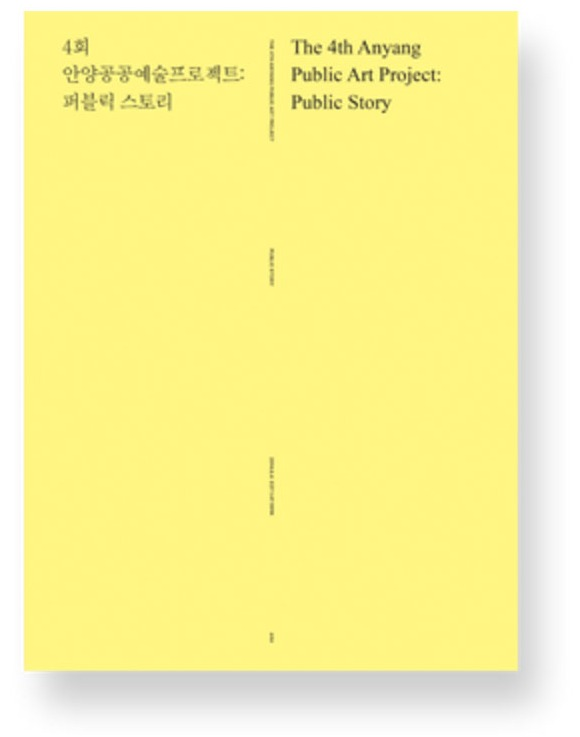

도록
4회 APAP는 읽는 이가 필요에 맞추어 온라인에서 제작할 수 있는 주문형 도록을 선보인다. 독자는 4회 APAP 웹사이트의 도록 페이지(http://apap.or.kr/catalogue) 에서 자신만의 도록을 구성하고, PDF 형태로 받아 원하는 크기와 재질의 종이에 각자 인쇄할 수 있다.
4회 APAP의 도록과 웹사이트는 언제나 동일한 내용을 담도록 초기부터 기획되었다. 이에 따라 4회 APAP는 2012년 말부터 2014년까지 이루어진 모든 활동을 온라인 데이터베이스에 실시간으로 기록하였고, 웹사이트를 통해 기록을 유통해 왔다. 동일한 데이터베이스에 기반을 두고 있는 이 도록—또는 도록 생성 시스템—은 이 기록들을 자동으로 배열하고 목차화하여 인쇄 가능한 책의 형태로 실시간 재구성한다. 그 결과, APAP 웹사이트의 내용은 업데이트되는 순간 바로 도록으로 만들어질 수 있으며, 어제의 도록과 오늘의 도록은 서로와 다른 내용을 담고 있을 수 있다. 이러한 특성 때문에, 가변적인 쪽번호와 함께 해당 도록이 생성된 시각을 표시하는 타임스탬프를 표시하고 있다.
도록/웹사이트를 기획하는 데에 중점이 된 것은 항시 변화하는 공공예술의 속성을 고려하여 안양의 현재를 실시간으로 보여주되, 원하는 정보에 대한 접근성을 개별 독자에게 충분히 그리고 지속적으로 보장해주는 것이었다. 따라서 우리는 이 도록을 통해 2005년 이래 10년 동안 쌓인 APAP의 모든 기록과 정보를 각자의 이야기로 직조해갈 수 있는 기능적, 기술적 토대를 제공하고자 했다. 이런 목적 하에 디자인된 도록 생성 시스템은 4회 APAP 폐막 이후에도 지속적으로 생성되는 APAP의 콘텐츠를 디자이너나 편집자의 개입 없이도 즉각 자동으로 도록화할 수 있도록 설계되었다. 따라서 4회 APAP의 개별 프로그램부터 지난 1-3회의 아카이브, 그리고 폐막 이후의 각종 업데이트까지, 도록을 생성하는 시점에서 APAP의 모든 자료는 이 도록에 포함될 수 있는데, 독자 개개인이 읽고자 하는 맥락에 따라 원하는 내용만 솎아내어 책으로 구성할 수도 있다.
4회 APAP의 도록을 접할 수 있는 또 다른 방법은 위 시스템을 활용한 하나의 사례로 제작된 300부 한정의 특별판이다. 이 특별판은 2015년 1월의 인쇄 시점을 기준으로 제작되며, 1-3회의 아카이브를 제외한 4회 APAP의 모든 콘텐츠를 담은 4회 APAP 공식 도록으로써 인쇄와 제본의 방식을 특화해 제작되었다.

1. 나만의 도록 목차
4회 APAP의 작품부터 아카이브까지, APAP 웹사이트의 모든 페이지들을 도록에 포함시킬 수 있습니다. 원하는 페이지의 오른쪽 위에 위치한 '도록에 포함시키기'를 클릭하여 나만의 도록 목차에 추가하세요.
2. 나만의 도록 생성하기
나만의 목차대로 구성된 PDF 형식의 도록을 받을 이메일 주소를 입력해주세요.
안양공공예술프로젝트
ANYANG PUBLIC ART PROJECT
경기도 안양시 만안구 예술공원로 180
info@apap.or.kr
 031–687–0548
031–687–0548
 Copyright 2016
Copyright 2016